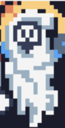
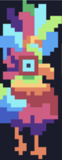

Guía de juegoEl objetivo del juego es recuperar el conocimiento escondido en seis islas temáticas. Cada isla está dedicada a un aspecto del saber:Tu objetivo es completar los niveles de memorice en cada isla para restaurar el conocimiento.
Controles del juego
Versión Web
Selecciona y empareja cartas.
Versión Móvil
Toca la pantalla para seleccionar y emparejar cartas.
Jefes en cada isla
Isla de los NúmerosXīlōticahualli, el Códice Viviente
Es una criatura gigantesca y mística hecha de piedra y códices antiguos,
que muestra símbolos y números constantemente cambiantes en su piel. Sus
movimientos son lentos pero poderosos, y en su pecho lleva un glifo que
representa la eternidad.
Isla de los Meses del AñoCuauhcalli, el Guardián del Tiempo
Cuauhcalli es un guerrero imponente con una armadura hecha de fragmentos del
calendario azteca. Su cuerpo cambia según el mes del año que represente,
alternando entre estaciones y elementos.

Isla de los Días de la SemanaTepeyōltzin, el Espectro del Círculo
Tepeyōltzin es un espectro que flota en un círculo de luz y sombra. Representa
el ciclo interminable de los días y parece proyectar las fases de los días
(amanecer, crepúsculo, etc.) en su manto.

Isla de los ColoresTlapallītzilin, el Ave Multicolor
Un enorme pájaro legendario, cuyas plumas cambian constantemente de color,
representando los tonos sagrados del espectro náhuatl. Cuando aletea, desprende
destellos de diferentes colores.
Isla de las Partes del CuerpoIxtlīquiahuitl, el Titán de Carne y Hueso
Un coloso formado por fragmentos de partes del cuerpo, como si fuera una creación
de varias entidades. Cada parte se mueve independientemente y representa un
símbolo importante de la anatomía y la fuerza humana.
Isla de los VerbosTlayocoya, el Espíritu de la Acción
Tlayocoya es un ser cambiante que toma forma de acuerdo con las acciones que
realiza (caminar, correr, volar, etc.). Se mueve constantemente, y es difícil
de alcanzar porque cambia de forma cada pocos segundos.
Elige el lenguaje en el que quieres tener el juego y el que vas a aprender!